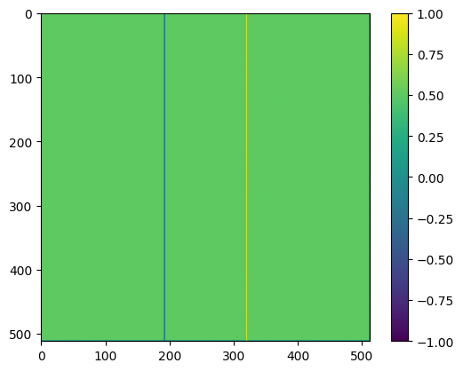
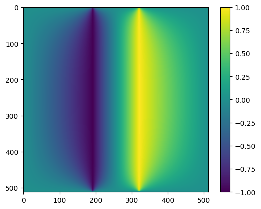
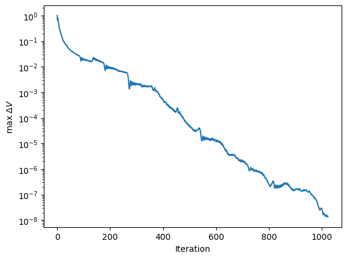

Conjugate gradient solutions#
import numpy as np
import matplotlib.pyplot as plt
---------------------------------------------------------------------------
ModuleNotFoundError Traceback (most recent call last)
Cell In[1], line 1
----> 1 import numpy as np
2 import matplotlib.pyplot as plt
ModuleNotFoundError: No module named 'numpy'
Try out the conjugate gradient method#
def conjgrad(A, b, x = None, niter = 20):
# Find a solution to Ax=b
# If there is no initial guess, create one
if x is None:
x = 0*b
# Calculate first residual r_0 and set p_0 equal to it
r = b - A@x
p = r.copy()
# Keep track of the size of the residual and
# exit early if it gets small enough
rr = r@r
for i in range(niter):
Ap = A@p
pAp = p@Ap
alpha = rr / pAp
x = x + alpha*p
r = r - alpha*Ap
rr_new = r@r
beta = rr_new / rr
p = r + beta*p
rr = rr_new
print('Iteration %d: pAp = %lg, residual=%lg' % (i, pAp, rr**0.5))
return x
n = 1000
A = np.random.rand(n,n)
A = A@A.T
# Adding a diagonal component reduces the range of singular values, converges faster
A = A + np.diag(n * np.ones(n))
print('Matrix condition number =', np.linalg.cond(A))
b = np.random.randn(n)
x = conjgrad(A, b, niter = 20)
print('Max error = ', np.max(np.abs(b-A@x)))
Matrix condition number = 251.27249667362318
Iteration 0: pAp = 1.32784e+06, residual=186.983
Iteration 1: pAp = 7.16622e+09, residual=2.31881
Iteration 2: pAp = 6180.65, residual=0.15883
Iteration 3: pAp = 29.3405, residual=0.0117783
Iteration 4: pAp = 0.161341, residual=0.000848406
Iteration 5: pAp = 0.000839715, residual=9.04718e-05
Iteration 6: pAp = 0.00106833, residual=8.66283e-05
Iteration 7: pAp = 1.68545e-05, residual=4.63837e-06
Iteration 8: pAp = 2.49881e-08, residual=3.16472e-07
Iteration 9: pAp = 1.14783e-10, residual=2.18164e-08
Iteration 10: pAp = 5.50834e-13, residual=1.59086e-09
Iteration 11: pAp = 3.57445e-15, residual=9.00945e-09
Iteration 12: pAp = 1.66961e-11, residual=1.09224e-10
Iteration 13: pAp = 1.38687e-17, residual=8.01771e-12
Iteration 14: pAp = 7.49373e-20, residual=5.60995e-13
Iteration 15: pAp = 3.65244e-22, residual=3.98153e-14
Iteration 16: pAp = 1.84057e-24, residual=1.1552e-14
Iteration 17: pAp = 3.14509e-23, residual=2.95542e-15
Iteration 18: pAp = 1.0811e-26, residual=2.17477e-16
Iteration 19: pAp = 5.53927e-29, residual=1.57833e-17
Max error = 9.769962616701378e-15
Application to Laplace’s equation#
def set_bcs(n):
# Create a mask to set the boundary points
# (following https://github.com/sievers/phys512-2022/tree/master/pdes )
mask = np.zeros([n,n],dtype='bool')
x = np.linspace(-1,1,n)
xsqr = np.outer(x**2,np.ones(n))
rsqr = xsqr+xsqr.T
R = 0.1
mask[rsqr<R**2] = True
mask[:,0] = True
mask[0,:] = True
mask[-1,:] = True
mask[:,-1] = True
bc = np.zeros([n,n])
bc[mask] = 0.0
bc[rsqr<R**2] = 1.0
return mask, bc
def set_bcs_capacitor(n):
mask = np.zeros([n,n],dtype='bool')
x1 = 3*n//8
x2 = n-x1
mask[:, x2] = True
mask[:, x1] = True
bc = np.zeros([n,n])
bc[:, x2] = 1.0
bc[:, x1] = -1.0
mask[:,0] = True
mask[0,:] = True
mask[-1,:] = True
mask[:,-1] = True
return mask, bc
def conjgrad_laplace(x, b, n, mask, niter = 20):
# Find a solution to Ax=b
# Calculate first residual r_0 and set p_0 equal to it
r = b - Ax(x, n, mask)
p = r.copy()
rr = r@r
delta_x = np.zeros(niter)
for i in range(niter):
Ap = Ax(p, n, mask)
pAp = p@Ap
alpha = rr / pAp
x = x + alpha*p
r = r - alpha*Ap
# keep track of how much x changes as a measure of convergence
delta_x[i] = np.max(np.abs(alpha*p))
rr_new = r@r
beta = rr_new / rr
p = r + beta*p
rr = rr_new
if i%(niter//10) == 0:
print('Iteration %d: pAp = %lg, residual=%lg' % (1+i, pAp, rr**0.5))
if i%(niter//10):
print('Iteration %d: pAp = %lg, residual=%lg' % (1+i, pAp, rr**0.5))
return x, delta_x
def Ax(x, n, mask):
V = x.copy()
V = V.reshape((n,n))
# We set the boundary values to zero so that boundary points do not contribute to the
# averaging. This is taken care of by the b vector
V[mask] = 0
Vnew = V - 0.25 * (np.roll(V,1,0) + np.roll(V,-1,0) +
np.roll(V,1,1) + np.roll(V,-1,1))
Vnew[mask] = 0
Vnew = Vnew.reshape(n*n)
return Vnew
# Solve Laplace's equation with conjugate gradient
n = 512
mask, bc = set_bcs_capacitor(n)
#mask, bc = set_bcs(n)
# Initial guess for the potential
V = np.zeros([n,n]) + 0.5
V[mask] = bc[mask]
plt.imshow(V)
plt.colorbar()
plt.show()
# The matrix bc has zeros in the interior points and the boundary condition
# values in the boundary points. We calculate the part of the averaging
# that includes the boundary separately and then move it onto the right hand side
# as our b vector
b = 0.25 * (np.roll(bc,1,axis=0)+np.roll(bc,-1,axis=0)+
np.roll(bc,1,axis=1)+np.roll(bc,-1,axis=1))
b[mask] = 0
b = b.reshape(n*n)
# This is the initial guess for the potential
x = V.reshape(n*n)
# Solve and then reshape into a 2D grid
x, delta_x = conjgrad_laplace(x, b, n, mask, niter = 2*n)
V = x.reshape((n,n))
plt.clf()
plt.imshow(V)
plt.colorbar()
plt.show()
plt.clf()
plt.plot(np.arange(len(delta_x)), delta_x)
plt.ylabel(r'max $\Delta V$')
plt.xlabel(r'Iteration')
plt.yscale('log')
#plt.xscale('log')
plt.show()

Iteration 1: pAp = 96, residual=6.92695
Iteration 103: pAp = 0.0158729, residual=0.169523
Iteration 205: pAp = 0.00236602, residual=0.0700791
Iteration 307: pAp = 0.000195086, residual=0.0210845
Iteration 409: pAp = 8.01209e-06, residual=0.00424184
Iteration 511: pAp = 9.59754e-08, residual=0.000430214
Iteration 613: pAp = 4.20298e-09, residual=8.51102e-05
Iteration 715: pAp = 1.85836e-10, residual=1.84348e-05
Iteration 817: pAp = 4.72007e-12, residual=2.89834e-06
Iteration 919: pAp = 9.69988e-13, residual=1.32976e-06
Iteration 1021: pAp = 1.58396e-14, residual=1.64154e-07
Iteration 1024: pAp = 1.46728e-14, residual=1.57431e-07


The convergence is exponential.